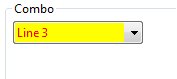
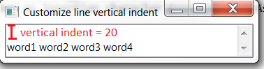

Here are descriptions of some of the changes of interest to plug-in developers made to the Eclipse Platform and SWT for the 4.10 release of Eclipse.
New features oriented towards end-users of the platform can be viewed in the What's New section of the Workbench User Guide.
Platform Changes |
|
| Enable/Disable completion proposal trigger characters in ContentAssistant |
New methods have been added to the ContentAssistant class to allow consumers to configure whether the
completion proposal trigger characters (which can be used in addition to Enter key to insert
the current completion proposal) are honored or ignored.
If
This feature is useful if your content-assist is configured to automatically trigger often (such
as on every character insertion). Coupling heavy usage of auto-activation of content-assist and extra
insertion trigger characters often results in undesired insertions, making it preferable to keep only
Enter as the insertion character ( |
SWT Changes |
|
| Added experimental support for GTK4 |
SWT has introduced basic, experimental support for GTK4. The GTK bindings can be built using the build script
(build.sh target="_blank") with the arguments -gtk4 install.
Currently only Snippet1 works,
further GTK4 support will be introduced in the Eclipse 4.11 release.
|
| Styling of read-only Combo on Windows |
Setting the background and foreground color of a SWT.READ_ONLY Combo on Windows is now supported.
 |
| API added to customize line vertical indent in StyledText |
A new API StyledText.setLineVerticalIndent(int lineIndex, int verticalLineIndent) has been added to customize the vertical indent of the line with the specified line index.
The corresponding getter StyledText.getLineVerticalIndent(int index) has also been added.
For an example, see Snippet374 which sets the vertical indent for the first line:
text.setText("word1 word2 word3 word4");
text.setLineVerticalIndent(0, 20);
 |